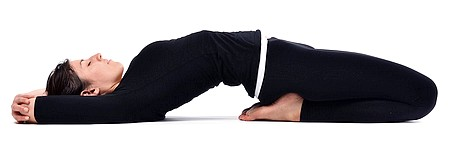
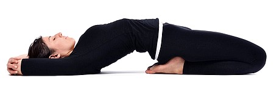

Растяжка
Зачем нужно растягиваться?
Тренировки подразумевают контролируемое травмирование тканей, с целью адаптации их к нагрузкам. Такое повреждение мышц и сухожилий делает их менее эластичными. Так же смещение баланса напряжения мышц агонистов и антагонистов приводит к укорачиванию более сильных.
Что нужно растягивать?
Мышцы с помощью сухожилий крепятся к костям, связки скрепляют кости вместе в суставах. Мышцы хорошо тянуться, сухожилия плохо тянутся, связки эластичнее чем сухожилия. Существенное растяжение сухожилий и связок является травмой и споровождается болью. Связки защищают от избыточного движения в суставе, растяжение связок приводит повышенному риску вывиха и уменьшению возможной нагрузки. Чтобы не тянуть сухожилия стоит удерживать напряжение подальше от сустава. Чтобы избежать нагрузки на связки при растяжке можно держать небольшой угол в суставе, если напряжение локализуется в районе сустава что то идет не так.
Как?
Виды растяжки. Названия условны и не противопоставляют разные виды.
Изометрическая(ИР) - чередование максимального напряжения в мышце с расслаблением. Ее еще называют постизометрическая релаксация(ПИР). Требует предварительного разогрева. ИР снимает повышенное напряжение\расслабляет.
Активная(АР) заключается в напряжении мышц антагонистов, тянущее положение не использует вес тела. Если мышцы антагонисты слабее, тогда нужно выравнивать напряжение АР. Например обычно тренирую трицепсы и не загружаю бицепсы, или забиваю икроножные и не прорабатываю переднюю часть голени. АР помогает это компенсировать. Удержание напряжения в антагонистах, после расслабления агонистов, помогает выравнивать напряжение между ними.
В пассивной вас тянет внешняя сила, например другой человек.
Динамическая(ДР) - тянущие контролируемые движения в широкой амплитуде. ДР можно использовать для разогрева перед тренировкой, зарядки.
Баллистическая - неконтролируемые движения, рывки в крайнем диапазоне движения.
Статическая(СР)
Удержание положения в крайней точке движения без рывков. Мягкое, расслабленное вытягивание под собственным весом, без существенных усилий, рывков и боли. Требует предварительного разогрева и снятия напряжения с мышц, иначе вероятны травмы и растяжение связок и сухожилий вместо мышц. СР направлена на работу с существенными измениями в тканях, ограничивающих подвижность.Пассивной и баллистической нужно избегать ввиду травмоопасности.
Чтобы растянуть напряженную мышцу, ее сначала нужно расслабить ИР.
Если мышца не напряжена, можно сразу растягивать ее ДР или АР.
Если этого недостаточно переходим к СР, именно она удлиняет мышцу,
за счет удержания позиции крайнего вытяжения.
ИР, ДР, АР считаются более естественными чем СР, которую без неоходимости лучше избегать.
Использую ДР в разном темпе и короткими удержаниями во время зарядки.
ИР и последующую СР с не сильным, но продолжительным напряжением после тренировок\разогрева.
Нерегулярно делаю АР чтобы лучше зафиксировать результат растяжки.
Выводы
Если растяжка, не динамическая, то перед ней стоит разогреться для профилактики травм.
Во время растяжки важно нормально дышать, чтобы расслабить тело.
Гибкость у каждого своя, нужно чувствовать тело и не спешить, избегать болевых ощущений.
Не стоит ограничиваться одним видом растяжки, их сочетание может дать больше.
Важно соблюдать равновесие между гибкостью и силой,
чтобы они были функциональны, а не заниматься чем то одним.
Позвоночник
После нагрузок, подъема тяжестей или в конце дня важно восстановить нормальную длинну позвоночника, убрать зажатости\напряжение. При выполнении упражнений вероятен, а может и обязателен хруст, но боли быть не должно. Если есть травмы, то стоит избегать полной амплитуды, рывков и боли.
низ
середина
верх

Иногда растянуть может помочь другой человек.
Данные упражнения помогают сразу. Несколько менее эффективным, но более безопасным может быть вис в различных вариантах, поскольку его надо удерживать значительное время и он требует больше усилий. Например вис на перекладине, брусьях, кольцах, канате, стульях. Вис можно совместить с удержанием ног на пресс, и делать хоть на полу. При висе нужно не провисать в плечах, а держать верх спины и плечи напряженными.
Статическая растяжка
Делаем до расслабления тканей, примерно до 60с, после нагрузок или вечером. Нужна для профилактики укорачивания мышц и сухожилий, расслабляет ткани примерно на пару часов. Для долговременного эффекта и улучшения растяжки упражнения стоит делать ежедневно.
Суть в удержании напряжания определенных тканей при сокращенных противоположных(антагонисты) с помощью упора. Как пример растяжка трехглавой(трицепса) при сокращенной двухглавой(бицепс), создавая упор второй рукой или стеной.
НИЗ
передняя часть бедра

икры


внутреняя часть бедра

задняя и передняя часть бедра

нога

ноги
ягодицы

камбала

голень
 
ВЕРХ
верх спины

низ спины
бицепс+грудь

трицепс

предплечье1

предплечье2
трапеция1

трапеция2
Часть картинок взята с сайта goodlooker.
Интересная литература
Растяжка расслаблением - Цацулин Павел
Stretching Exercises Encyclopedia by Oscar Moran, Isabel Arechabala
Ксения Шатская, Биомеханика растяжки
Краткое пособие по развитию гибкости, Осьмак Константин Викторович
Растяжка для гибкости: 6 видов стретчинга
Built on GitHub with MkDocs and Pure theme